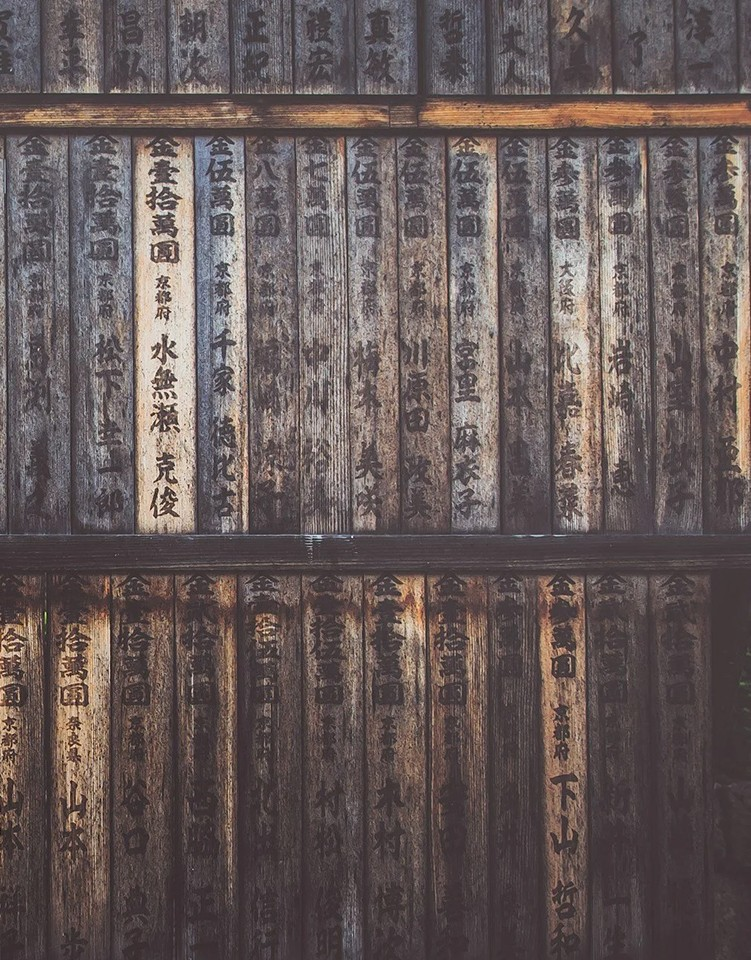

Materials: Banana-fiber (bashōfu) cloth dyed with indigo and seawater mordant Size / Weight / Shape: 94 cm x 58 cm; 210 g; rectangular panel with unfinished edge Estimated Age: 19th century CE Preservation State: Very good; slight fading on one edge; salt residue stable. Location Found: Itoman Village, Okinawa (26.1209° N, 127.6647° E); donated by local weaving collective following documentation study. Use and Function: Everyday and ceremonial cloth; pattern associated with maritime safety prayers. Weft compression and softened fiber tips indicate prolonged wear. Manufacture Clues: Hand-loomed on backstrap loom; indigo streaking from uneven immersion typical of community dye vats.
Cultural Context (from dig notes):
Found with: Contemporary spinning whorls and dye baskets.
Burial Context: Preserved in family storeroom, not burial.
Symbolism: Sea currents as lineage; weaving as invocation.
Comparison: Comparable bashōfu from Yaeyama show geometric regularity; this piece's organic flow reflects regional improvisation rooted in oral chant rhythms.
Materials: Willow wood Size / Weight / Shape: 27 cm x 2.5 cm x 2 cm; 60 g; tapered shaft with spiral cut fronds Estimated Age: Early 20th century CE Preservation State: Excellent; intact curls; minimal insect wear. Location Found: Nibutani Village, Biratori, Hokkaidō (42.5482° N, 142.1451° E); retrieved from roof storage of private dwelling during cultural documentation project. Use and Function: Offering to kamuy (spirits) in domestic rituals; surface discoloration near base from repeated placement in hearth ash. Manufacture Clues: Spiral shaving pattern cut with iron knife; distinctive clockwise twist typical of Saru River style.
Cultural Context (from dig notes):
Found with: Bark rope and birch-bark prayer sheets.
Burial Context: Domestic altar setting.
Symbolism: Wind's path visualized; channel for communication with unseen beings.
Comparison: Parallels ceremonial inau in Hokkaidō Museums but shows rarer domestic-use scale, affirming household continuity of ritual practice.
Materials: Paulownia wood box containing paper, photographic prints, tin, and fabric Size / Weight / Shape: 18 cm x 12 cm x 7 cm; 480 g; rectangular lidded box with dovetail corners Estimated Age: ca. 1955 CE Preservation State: Stable; slight paper yellowing; minor warping of lid. Location Found: Tokyo, Bunkyō Ward (35.7167° N, 139.7516° E); donated by original family during History in Our Hands project. Use and Function: Personal repository of wartime and reconstruction memories. Photographs show fingerprint oils and crease lines from frequent handling. Manufacture Clues: Machine-cut joints, locally sourced paulownia typical of mid-century keepsake boxes.
Cultural Context (from dig notes):
Found with: Family oral testimonies and digitized letters.
Burial Context: Stored in attic rafters of postwar home.
Symbolism: Healing through preservation; the ordinary object as vessel for collective trauma.
Comparison: Similar memory boxes in Kansai collections are community-assembled; this individualized example bridges private grief and public history.
Materials: Banana-fiber (bashōfu) cloth Estimated age: 19th century CE Location found: Itoman Village, Okinawa
Woven from banana fiber and dyed in communal vats with indigo set in seawater, this bashōfu panel is called the Textile of Wind and Current. Hand-loomed on a backstrap loom, its flowing pattern and uneven indigo streaks record human touch: the rhythmic shuttle, the shared dye pot, the breath of chant. Softened weft tips and stable salt residue show the cloth lived at sea's edge—worn, washed, and offered as part of maritime safety prayers. Unlike more geometrically rigid examples from the Yaeyama islands, this Itoman piece carries improvisation—a textile that moves like current and sings like an oral line. Preserved in a family storeroom and donated by a local weaving collective, it is a living thread: not merely fabric but a communal act of protection woven into daily life.
Ainu Carved Prayer Stick (Inau)
Materials: Willow wood Estimated age: Early 20th century CE Location found: Nibutani Village, Biratori, Hokkaidō
Carved from willow along the Saru River, this inau carries the breath of prayer. Each spiral shaving—cut with a single turning motion—follows the wind's path, sending thanks and requests to the kamuy, or spirits. Recovered from a Nibutani home, the darkened base shows it once stood in hearth ash during family rituals. While museums often display grand ceremonial inau, this slender example reveals a quieter devotion—the everyday dialogue between people and the unseen. For the Ainu, to carve is to speak in the language of the land. The inaus motion captures both wind and word, linking human breath with the rhythms of nature. Even now, its curls hold the echo of prayer—a reminder that communication with the world around us begins not with possession, but with respect.
Postwar Memory Box
Materials: Paulownia wood box Estimated age: ca. 1955 CE Location found: Tokyo, Bunkyō Ward
A small paulownia box from a Tokyo attic holds private moments of postwar life. Machine-cut joints and dovetailed corners date this keepsake to the mid-1950s; inside are papers, photographs, a tin, and fabric. The photos show fingerprint oils and crease lines—evidence of hands repeatedly turning to these images for solace, memory, and meaning. Slight yellowing of the paper and a warped lid record long storage in an attic, not deliberate burial. Donated by the original family through the History in Our Hands project, this individualized memory box bridges private grief and public history. It reminds us that collective recovery is composed of countless personal acts of preservation—folding letters, protecting prints, keeping a small vessel as a guardian of everyday loss and hope.
Archaeology - Traces Beneath the Soil
Clay Mask of the Northern Coast
Materials: Fired clay with traces of iron-oxide pigment Size / Weight / Shape: 12 cm x 10 cm x 3 cm; 280 g; oval with perforated eyes and stylized cheek ridges Estimated Age: Jōmon Period, ca. 2500 BCE Preservation State: 70 % complete; minor edge losses; pigment visible under UV analysis Location Found: Ōkawa shell midden, Aomori Prefecture (40.7994° N, 140.7592° E); recovered from midden layer III, 1.4 m below surface Use and Function: Ritual mask likely worn during fertility or coming-of-age ceremonies. Microscopic abrasions at tie-holes indicate string wear from repeated use. Manufacture Clues: Coarse local clay with straw temper; smoothing marks from finger modeling visible along interior surface.
Cultural Context (from dig notes):
Found with: Charred animal bone, shell beads, and a shallow red-slipped bowl.
Burial Context: Domestic-ritual refuse pit adjacent to dwelling foundation.
Symbolism: Embodies early aesthetic of imperfection (wabi-sabi precursors).
Comparison: Similar masks from the Hachinohe region show less pigment, suggesting this community's distinctive ritual identity.
Materials: Bronze alloy (Cu 87 %, Sn 12 %, Pb 1 %) Size / Weight / Shape: 22 cm x 9 cm x 0.6 cm; 640 g; curved plate section with partial rim ridge. Estimated Age: Yayoi Period, ca. 100 BCE Preservation State: Fragmentary but stable; green patina with localized corrosion pits. Location Found: Asuka Terrace Field Site, Nara Prefecture (34.4740° N, 135.7895° E); plow layer, 60 cm depth, near irrigation terrace edge. Use and Function: Ritual agricultural bell fragment, possibly buried as harvest offering. Linear wear lines suggest it once struck a clapper. Manufacture Clues: Lost-wax cast; interior tool marks from smoothing and tin enrichment noted under SEM imaging.
Cultural Context (from dig notes):
Found with: Carbonized rice hulls, small polished stones, and deer scapula hoe fragment.
Burial Context: Intentional placement within field-boundary mound.
Symbolism: Union of technology and devotion; invocation of abundance.
Comparison: Comparable bells from Shiga show abstract motifs—this fragment's grain design is rare, emphasizing local agrarian ritual focus.
Materials: Japanese cypress (hinoki), partially mineralized Size / Weight / Shape: 68 cm x 9 cm x 6 cm; approx. 2.4 kg; rectangular beam section. Estimated Age: Kofun Period, ca. 450 CE Preservation State: Excellent charring preserved cellular structure; partial splitting along grain. Location Found: Takasago Watchtower Site, Okayama Prefecture (34.7089° N, 134.0108° E); Layer IV, burn horizon. Use and Function: Structural support beam from elevated watchtower or ritual storehouse; burned during abandonment or conflict. Manufacture Clues: Adze marks along mortise joint; tool spacing consistent with iron-blade carpentry.
Cultural Context (from dig notes):
Found with: Iron arrowheads, roof tile shards, compacted ash lens.
Burial Context: Collapse stratum sealed by landslide.
Symbolism: Fire as both destroyer and preserver — literal transition from community defense to mythic ruin.
Comparison: Matches beam profiles at early Kibi kingdom sites, aligning local power consolidation with mainland-influenced construction methods.
Shaped over 4,000 years ago from local clay and brushed with red iron pigment, this mask once covered the face of a Jōmon ritual participant along Japan's northern coast. Found in a domestic-ritual pit near Aomori, its worn tie-holes show it was used repeatedly—perhaps during ceremonies of fertility or coming-of-age. The mask's uneven ridges and soft asymmetry reflect an early embrace of imperfection, a sensibility that would later inspire the Japanese aesthetic of wabi-sabi. Red, symbolizing vitality, linked the wearer to the life cycles of land and sea. Though fragmentary, the mask endures as a witness to a worldview in which humans, spirits, and materials shared one story. Its fired clay still carries the warmth of the hands that shaped it—an ancient face gazing forward from the deep time of Japan's earliest artists.
This bronze fragment once rang across a Yayoi-period field more than two thousand years ago. Found in Asuka, Nara Prefecture, it comes from a ritual bell known as a dōtaku—a sacred instrument that linked farming communities with the spirits of grain and rain. The curved metal bears green patina, tool marks from its maker's hand, and faint scratches where a clapper once struck. Around it lay rice hulls and a deer-bone hoe—signs of offering at harvest's end. Unlike ornate bells from other regions, this piece's subtle grain pattern mirrors the rice itself, blurring craft and prayer. Even as a fragment, it carries the memory of sound: a quiet echo of fields once tended with hope for abundance.

Charred Timber from Hilltop Dwelling
Materials: Japanese cypress Estimated age: Kofun Period, ca. 450 CE Location found: Okayama Prefecture
This beam of hinoki wood once formed part of a watchtower high above the Takasago valley, around 450 CE. Its mortise joint and iron-blade adze marks reveal expert craftsmanship—evidence of a community balancing defense, ritual, and daily life. Fire ended the structure's life but preserved its memory. The charcoal-black surface you see today is both ruin and record: an imprint of transformation. In the Kofun world, fire was not merely destructive—it purified, sealing the living world into myth. Found beside arrowheads and roof tiles, this timber links human endeavor to elemental power. Like stories of burning towers from Greece to Polynesia, its legacy lies in renewal through loss. What once upheld a roof now upholds remembrance—a fragment through which a vanished landscape continues to speak.
Histories - What does all this mean?
Clay Mask of the Northern Coast
Materials: Fired clay with traces of iron-oxide pigment Estimated age: Jōmon Period, ca. 2500 BCE Location found: Ōkawa shell midden, Aomori Prefecture Catalog number: MC-HI-001
Recovered from the Ōkawa shell midden in northern Honshū, this clay mask offers a rare glimpse into the ceremonial life of a Jōmon coastal community. Shaped by hand from coarse local clay tempered with straw, the mask bears smoothing marks along its inner surface and faint traces of red pigment derived from iron oxide—an early expression of the color's symbolic association with vitality, transformation, and fertility in prehistoric Japan. Microscopic abrasions near the tie-holes indicate repeated use, suggesting it was worn rather than purely votive.
Found in a domestic-ritual refuse pit alongside shell beads, charred bone, and a red-slipped bowl, the mask likely belonged to seasonal rites celebrating fertility or social transition. The Jōmon people often blurred boundaries between the sacred and the domestic, embodying spirituality in everyday materials. Its asymmetrical cheek ridges and incomplete form speak to an aesthetic valuing imperfection and impermanence—qualities later echoed in the wabi-sabi sensibility that would shape Japanese art millennia later.
Comparative examples from nearby Hachinohe show reduced pigment traces, implying regional variation in ritual practice. Within the framework of Indigenous Storywork, such diversity reflects localized narrative sovereignty: each community interpreted shared cosmologies through its own materials and rhythms. From a post-structuralist lens, the mask resists a single reading—it is simultaneously a face, a performance, and a threshold between human and nonhuman worlds.
The mask's enduring presence, despite erosion and partial loss, invites viewers to consider the Jōmon concept of relation rather than possession: meaning formed through continuity with land, clay, and ceremony. The artifact's brokenness is not decay but dialogue—a remnant still participating in the stories of northern Japan's earliest artists.
Materials: Willow wood Estimated age: Early 20th century CE Location found: Nibutani Village, Biratori, Hokkaidō Catalog number: MC-HI-002
This finely carved inau—a wooden prayer stick—was found stored in the rafters of a dwelling in Nibutani Village, a heartland of Ainu cultural life along the Saru River. Fashioned from willow with a clockwise spiral shaving pattern, the piece embodies both craftsmanship and devotion. The direction of the twist aligns with regional Saru River style, emphasizing the ordered flow of prayer toward the kamuy, or spirits.
The inau's base shows darkened discoloration from repeated contact with hearth ash, confirming its use in domestic rather than large-scale ceremonial contexts. While museum examples often derive from communal rituals, this smaller prayer stick reflects the intimate scale of household spirituality—daily gestures of respect and reciprocity between human and spirit worlds. Bark rope and birch-bark prayer sheets found alongside it strengthen its association with offerings made within the home's sacred center.
In Indigenous Storywork terms, the inau is not a “tool” but a storying gesture—a physical manifestation of dialogue between people and place. The willow's spiral, carved with an iron knife, translates wind's motion into form: the invisible made visible. Through Cultural Semiotics, this twist functions as sign and movement, mediating the flow between the material and the unseen.
From a Post-Structuralist lens, meaning emerges not in the object alone but in its repeated use—the ritual act that transforms carved wood into a communicative being. The inau's fragility and refinement express a matrifocal worldview often overshadowed by patriarchal readings of religion; the domestic altar situates women as stewards of renewal and continuity.
A Decolonial Museology approach reminds us that this is not merely “folk art” but an element of a living cosmology. The inau is an offering, a relationship, and a responsibility. In its spiraling motion, we glimpse an Ainu understanding of the world as reciprocity in motion—each curl a prayer rising with the wind.
Materials: Japanese cypress (hinoki), partially mineralized Estimated age: Kofun Period, ca. 450 CE Location found: Takasago Watchtower Site, Okayama Prefecture Catalog number: MC-HI-003
This beam of charred hinoki wood once supported a hilltop structure overlooking the Takasago valley. Its mortise joint and adze marks, made with an iron blade, reveal skilled craftsmanship typical of early Kofun carpentry—a time when local builders in the Kibi region began integrating continental joinery methods into Japanese architectural traditions.
Recovered from a burn horizon sealed beneath a landslide, the timber was preserved by the very fire that destroyed it. Around it lay iron arrowheads, roof tiles, and compacted ash—signs of both habitation and conflict. The dual nature of fire here is striking: a force of ruin and a preserver of memory. Its mineralized surface retains the ghost of the structure it once upheld, a silent witness to the transformation of community space into archaeological layer.
The Kofun period (ca. 250-538 CE) marked Japan's emergence of powerful regional polities. Hilltop watchtowers and raised storehouses served as both strategic and spiritual nodes, mediating between defense and ritual oversight. Through Cultural Semiotics, the beam functions as a sign of that liminality—bridging protection, ritual purity, and political assertion. Its blackened surface evokes the paradox of the sacred and the scorched: purification through destruction, permanence through loss.
Drawing on Indigenous Storywork, we might understand the timber as a narrative residue, its scars and joinery recounting the gestures of those who shaped, used, and burned it. In Post-Structuralist terms, it resists singular interpretation—it is simultaneously structure, ruin, and archive.
Across civilizations, fire transforms wood into endurance: from Norse pyres to Polynesian burnt posts, destruction births continuity. Within this global pattern, the Takasago beam embodies a local cosmology in which dwelling, defense, and divinity converge. What remains is not simply a fragment of architecture but a testament to how societies inscribe meaning in materials—and how, in their burning, those meanings are released into story.
Materials: Banana-fiber cloth; indigo dye with seawater mordant Estimated age: 19th century CE Location found: Itoman Village, Okinawa Catalog number: MC-HI-004
A hand-loomed panel of banana-fiber (bashōfu), this cloth carries the visible history of coastal life. Woven on a backstrap loom and dyed in community vats—evidenced by uneven indigo streaking from immersion—the textile bears soft, compressed weft tips that show prolonged wear. Salt residue and a slightly faded edge attest to long use and exposure to maritime conditions. Donated by an Itoman weaving collective after local documentation, it arrived with spinning whorls and dye baskets, confirming its place in a living domestic production chain.
Patterns on the cloth read like moving water: rather than the geometric regularity found in some Yaeyama bashōfu, this piece's organic flow suggests improvisation rooted in oral practice. In Okinawan vernacular contexts, sea currents are often imagined as kin-lines—networks of relation that protect and carry families. The textile's association with maritime-safety prayers is suggested by its known provenance and traditional patterning, though attribution to a specific ceremony remains provisional.
Through Cultural Semiotics, the cloth functions as both sign and action: its indigo blue, fixed with a seawater mordant, indexes sea, salt, and labor; the softened fiber tips narrate touch—the body that wore, mended, and prayed through the cloth. Indigenous Storywork invites us to read the weave as an invocation: each shuttle pass becomes a verse, each dye-dip a communal breath toward safety on the current. From a Post-Structuralist vantage the textile resists singular meaning—its “everyday” and “ceremonial” uses collapse into one another in lived practice.
A Decolonial Museology approach asks that we not treat this panel as merely an aesthetic object but as the product of collective knowledge: community dye vats, shared whorls, and storeroom preservation. Its slight fading and salt traces are not deterioration only; they are testimony—material memory of voyages, chores, and prayers. We present the cloth not as an isolated artifact but as a continuing strand in Okinawa's maritime life-worlds.
Materials: Bronze alloy (Cu 87%, Sn 12%, Pb 1%) Estimated age: Yayoi Period, ca. 100 BCE Location found: Asuka Terrace Field Site, Nara Prefecture Catalog number: MC-HI-005
This curved bronze fragment—its green patina softened by time—once formed part of a Yayoi-period ritual bell, or dōtaku. Excavated from a terrace field at Asuka, it was found just below the plow layer beside carbonized rice hulls, polished stones, and a deer-bone hoe fragment. These associations suggest intentional placement at a field boundary—perhaps an offering for fertility or protection of the harvest.
Though incomplete, the fragment's story endures in its details: faint linear wear lines indicate that the bell once held a clapper; interior tool marks, visible under scanning electron microscopy, record the craftsman's finishing strokes and tin enrichment after casting. The lost-wax method employed here exemplifies Yayoi metallurgical skill, combining imported bronze technology with local ritual intent.
Unlike the more elaborate dōtaku of Shiga or Kyoto—often decorated with geometric or animal motifs—this piece bears a subtle grain-like pattern, evoking rice stalks or rippling water. Such imagery suggests an agrarian focus: a bell tuned not for warfare or courtly ceremony but for the rhythms of planting, rainfall, and yield.
From a Cultural Semiotic perspective, this fragment mediates between sound and silence, labor and prayer. Its original voice—when struck—was part of a sonic field joining human effort with natural cycles. Post-Structuralist reading reminds us that the fragment's meaning is plural: it is not only an instrument but also a memory of technology, belief, and community order. Indigenous Storywork encourages us to approach it not as a mute relic but as a remnant of relational knowledge—one that once “spoke” to soil, grain, and sky.
Through a Decolonial Museology lens, exhibiting this bell fragment invites reflection on the continuity between ancestral agrarian practices and living cultural relationships with land. Rather than a broken artifact, it is a resonant remainder—a bronze echo of the Yayoi people's attempt to keep balance between sustenance and spirit.
Materials: Paulownia wood box containing paper, photographic prints, tin, and fabric Estimated age: ca. 1955 CE Location found: Tokyo, Bunkyō Ward Catalog number: MC-HI-006
A modest paulownia box—its dovetailed corners and machine-cut joints characteristic of mid-20th-century Japanese manufacture—was kept in an attic rafters of a postwar Bunkyō home and donated by the original family during the History in Our Hands project. Inside are paper documents, photographic prints, a small tin, and scraps of fabric: everyday materials entrusted to this vessel and handled across decades. The photographs bear fingerprint oils and crease lines from frequent use; the paper shows slight yellowing and the lid a minor warp—material traces of repeated remembrance.
This box likely served as a private repository for wartime and reconstruction memories. Its contents and the family's accompanying oral testimonies indicate practices of preservation and healing: selecting, protecting, and periodically revisiting images and letters as part of making sense after upheaval. The domestic context—stored in a home's attic rather than institutional archive—signals the intimate scale of postwar recovery, when families curated their own histories amid broader social change.
Through Cultural Semiotics, the box functions as a signifying object: its machine precision speaks to industrializing postwar Japan, while the soft wear of photos and paper indexes lived emotion. Indigenous Storywork and narrative-centered approaches invite us to read the box as active storytelling—an object that gathers voices rather than silences them. A Post-Structuralist reading resists turning the box into a single narrative of loss or resilience; instead, it highlights overlapping meanings: grief, hope, pragmatic memory keeping, and familial identity.
A Decolonial Museology stance compels us to respect the family's custodianship and not extract these materials as spectacle. The box bridges private grief and public history: comparable community-assembled memory boxes in Kansai collections emphasize communal practices, while this individualized example shows how personal repositories became sites of civic memory. We present the box as a fragile archive—whose fingerprinted photographs and folded papers invite careful viewing, listening, and, where appropriate, collaboration with descendants about interpretation and access.